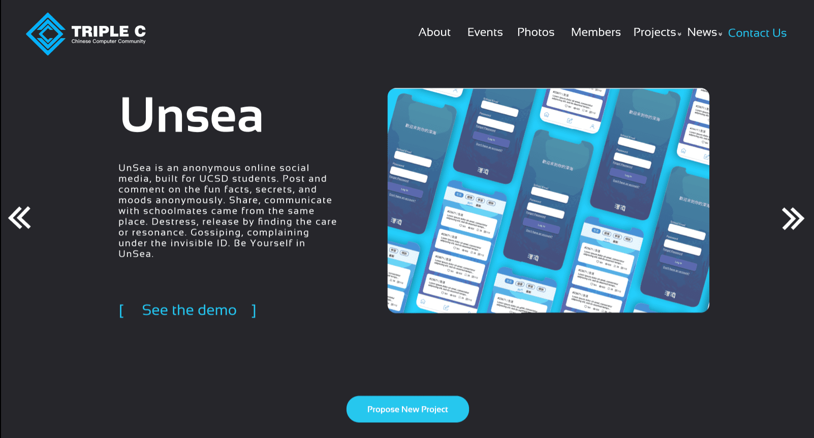

Triple C Official Website
INNOVATION & COLLABORATION

INNOVATION & COLLABORATION
One of my first projects as Triple C's new web designer and Front-end developer was to redesign and update our official website. While following our current brand, I implemented some new features to improve usability and work flow, revised it based on modern web-design trends, and better showcased our organization's ongoing projects.
Role: Web design, UX
By Daokai Lin
Tools: Adobe XD, Figma, Photosop
Triple C is a project-based, technology-driven incubator at UCSD. We help design and grow students' projects ranging from web platforms, mobile app to data analysis and machine learning.
While our members bring their new projects to our org each quarter, our website hadn't been updated for a period. As the face of our organization on the web, it is essential that our site reliably showcased our work, and served as an efficient information and contact portal.
I began by taking a look at our current site and taking note of areas where the visual design or user experience could be improved. Design opportunities I identified included:
1. Add projects section.
2. Optimize eventtimeline.
3. Automatically update the weekly newsletter.
Some other famous website put their products they want to sell or promote in the first page. The same logic applies here. We change the original mainpage into the project intro displayed in a more clear and intuitive way. Since our orgs is a project based orgs. And most of those who join this orgs are attracted by our project ideas.
We optimized the eventline into a gallery form. Since the previous version separate the event and the photo, which we thought as unnecessary. So we gather these two sections together to make these events displayed in a more clear and intuitive way. When mouse hover, the brief description will show up.

Newsletter section is the new function we have this semester. Its main purpose is to weekly update the both member inside the org and those who are interested in join this org about the progress of the project and event being held.
Resource center is one of the future feature we want to achieve to attract more ppl to visit this website. Here you could find the tips for the interview, opportunities for research labs, and documentations for workshops that are really useful for students. These sections will to be be filled up in near feature

To maintain our current design style, I kept using our playful blue and typeface, Sansation. Sansation did an excellent job of creating a modern feeling and conveying our brand sense of technology. So I decided to use this typeface by employing large, bold headers. Additionally, I chose to style the title using all uppercase.
Me and my group member will keep updating our web design to add more interesting features to showcase our projects and attract traffic in the future.